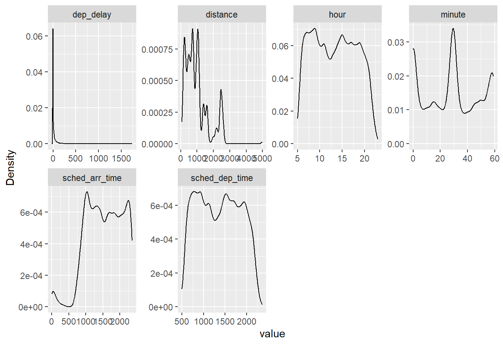

library("tidymodels") # Train- und Test-Sample aufteilen
library("tidyverse") # data wrangling
library("conflicted") # Name clashes finden
library("easystats") # stats made easy
library("DataExplorer") # Data Visflights-delay-simplified
lm
regression
interaction
yacsda
1 Hintergrund und Forschungsfrage
Wir untersuchen die Forschungsfrage Was sind Prädiktoren von Flugverspätungen. Wir nutzen dep_delay als AV (Zielvariable), also als die Variable, die wir vorhersagen wollen.
Dazu verwenden wir lineare Modelle als Modellierungsmethoden.
2 Ressourcen und Vertiefung
Dieser Post knüpft an den Post zur explorativen Datenanalyse der Flugverspätungen an (es gibt auch hier, Teil 1 und hier, Teil 2 ein Video zu diesem EDA-Post). Dieser Post ist eine längere (nicht-verkürzte) Version der vorliegenden Fallstudie.
3 Setup
3.1 Pakete laden
Wirklich wichtig sind nur tidymodels und tidyverse. Die restlichen Pakete werden nur am Rande benötigt. Man sollte auch nur die Pakete laden, die man für die Analyse benötigt.
3.2 Daten laden: Flights 2023
Aus Gründen der Datenökonomie nutzen wir eine kleinere Version des Datensatz flights. Wir nutzen nicht mehr die Daten aus dem 2013, sondern die neueren Daten aus dem Jahr 2023.
library(nycflights23)
data(flights)
set.seed(42) # Reproduzierbarkeit
flights <-
flights |>
sample_n(size = 3e4) # "3e4" heißt "3 Mal 10 hoch 4"Achtung: flights ist recht groß; die Regressionsmodelle können leicht ein paar Hundert Megabyte groß werden. Das bringt u.U. auch einen modernen Computer irgendwann ins Straucheln. Daher verringern wir aus Gründen der Einfachheit den Datensatz mit einem Zufallssample. Man beachte, dass die Präzision der Ergebnisse höher ist, wenn man nicht mit einem Zufallssample, sondern dem gesamten Datensatz arbeitet.
4 flights2: Nicht benötigte Variablen entfernen und ID hinzufügen
flights2 <-
flights %>%
select(-c(year)) %>% # "year" ist konstant und daher nutzlos
drop_na(dep_delay) %>%
mutate(id = row_number()) %>% # ID als fortlaufende Nummer
select(id, everything()) # id nach vorne ziehenDie ID hilft uns, einzelne Flüge (Beobachtungen) zu identifizieren, z.B. wenn wir einen bestimmten Flug näher analysieren oder entfernen wolllen.
Achtung: Die ID-Variable sollte man nicht als Prädiktor verwenden, da sie keine Information birgt.
5 Heimliche AVs entfernen
dep_delay ist unsere AV (Zielvariable), die Variable also, die wir vorhersagen.
arr_delay ist eine Variable, die uns nicht zur Verfügung steht, wenn es um die Vorhersage neuer, noch nicht gestarteter Flüge geht. Es wäre daher falsch, unser Modell auf einer Variable zu gründen, auf die wir später (beim Vorhersagen) nicht zurückgreifen können. Also raus damit.
Ähnliches gilt für ein paar andere Variablen:
heimliche_avs <- c("dep_time", "arr_time", "arr_delay", "air_time")flights2_ohne_heimliche_avs <-
flights2 |>
select(-any_of(heimliche_avs))any_of ist nur eine Tipphilfe. Man hätte auch direkt die Namen der zu entfernenden Spalten eingeben können, etwa select(-dep_time, ...).
Check:
names(flights2_ohne_heimliche_avs) [1] "id" "month" "day" "sched_dep_time"
[5] "dep_delay" "sched_arr_time" "carrier" "flight"
[9] "tailnum" "origin" "dest" "distance"
[13] "hour" "minute" "time_hour" Eine vielleicht gute Nachricht ist, dass Sie sich in der Prüfung nicht um diese Frage kümmern müssen.
6 Aufteilung in Train- und Testsample
Der Hintergrund zur Idee der Aufteilung in Train- und Test-Stichprobe kann z.b. hier oder hier, Kapitel 15, nachgelesen werden.
set.seed(42) # Reproduzierbarkeit
flights_split <- initial_split(flights2_ohne_heimliche_avs,
strata = dep_delay)7 flights_train2, flights_test2
set.seed(42) # Reproduzierbarkeit
flights_train2 <- training(flights_split)
flights_test2 <- testing(flights_split)Die “wirkliche Welt” (was immer das ist) besorgt die Aufteilung von Train- und Test-Sample für Sie automatisch. Sagen wir, Sie arbeiten für die Flughafen-Aufsicht von New York. Dann haben Sie einen Erfahrungsschatz an Flügen aus der Vergangenheit in Ihrer Datenbank (Train-Sample). Einige Tages kommt Ihr Chef zu Ihnen und sagt: “Rechnen Sie mir mal die zu erwartende Verspätung der Flüge im nächsten Monat aus!”. Da heute nicht klar ist, wie die Verspätung der Flüge in der Zukunft (nächsten Monat) sein wird, stellen die Flüge des nächsten Monats das Test-Sample dar.
Übrigens: In der Prüfung besorgt das Aufteilen von Train- und Test-Sample netterweise Ihr Dozent…
Check:
names(flights_train2) [1] "id" "month" "day" "sched_dep_time"
[5] "dep_delay" "sched_arr_time" "carrier" "flight"
[9] "tailnum" "origin" "dest" "distance"
[13] "hour" "minute" "time_hour" 8 lm0: Nullmodell
Eigentlich nicht nötig, das Nullmodell, primär aus didaktischen Gründen berechnet, um zu zeigen, dass in diesem Fall \(R^2\) wirklich gleich Null ist.
lm0 <- lm(dep_delay ~ 1, data = flights_train2)
model_parameters(lm0) # model_parameters zeit die (geschätzten) Regressionsgewichte (Betas)| Parameter | Coefficient | SE | CI | CI_low | CI_high | t | df_error | p |
|---|---|---|---|---|---|---|---|---|
| (Intercept) | 13.94694 | 0.3778359 | 0.95 | 13.20636 | 14.68753 | 36.91269 | 21918 | 0 |
Wir könnten anstatt model_parameters auch parameters nutzen; das ist der gleiche Befehl.
Allerdings gibt es den Befehl parameters in zwei Paketen, es käme also zu einem “Name Clash”. Das umgehen wir, indem wir model_parameter nutzen, und nicht parameters.
9 lm1: origin
lm1 <- lm(dep_delay ~ origin, data = flights_train2)
model_parameters(lm1) | Parameter | Coefficient | SE | CI | CI_low | CI_high | t | df_error | p |
|---|---|---|---|---|---|---|---|---|
| (Intercept) | 15.6106522 | 0.6670224 | 0.95 | 14.303240 | 16.918064 | 23.4034900 | 21916 | 0.0000000 |
| originJFK | 0.1861811 | 0.9524802 | 0.95 | -1.680749 | 2.053111 | 0.1954698 | 21916 | 0.8450270 |
| originLGA | -4.6351024 | 0.9103719 | 0.95 | -6.419497 | -2.850708 | -5.0914386 | 21916 | 0.0000004 |
Man vergleiche:
flights_train2 %>%
drop_na(dep_delay) %>%
group_by(origin) %>%
summarise(delay_avg = mean(dep_delay)) %>%
mutate(delay_delta = delay_avg - delay_avg[1])| origin | delay_avg | delay_delta |
|---|---|---|
| EWR | 15.61065 | 0.0000000 |
| JFK | 15.79683 | 0.1861811 |
| LGA | 10.97555 | -4.6351024 |
Der Mittelwertsvergleich und das Modell lm1 sind faktisch informationsgleich.
Aber leider ist es um die Modellgüte nicht so gut bestellt (eigentlich eher “grottenschlecht”):
r2(lm1)# R2 for Linear Regression
R2: 0.002
adj. R2: 0.002lm1 ist so schlecht, wir löschen es gleich wieder…
rm(lm1)10 lm2: All in
# NICHT AUSFÜHREN
#lm2_all_in <- lm(dep_delay ~ ., data = flights_train2)Modell lm2_all_in ist hier keine gute Idee, da nominale Prädiktoren in Indikatorvariablen umgewandelt werden. Hat ein nominaler Prädiktor sehr viele Stufen (wie hier), so resultieren sehr viele Indikatorvariablen, was dem Regressionsmodell Probleme bereiten kann (bei mir hängt sich R auf). Besser ist es in dem Fall, die Anzahl der Stufen von nominalskalierten Variablen vorab zu begrenzen.
Bei kleineren Datensätzen (weniger Variablen, weniger Fälle) lohnt es sich aber oft, das “All-in-Modell” auszuprobieren, als Referenzmaßstab für andere Modelle.
11 lm3: Verlorenes Modell
Dieses Modell ging verloren. Wo ist es hin? Wie geht es ihm? Leider gibt es keine Antwort in dieser Fallstudie; aber vielleicht in einer anderen…
Einigen Datensätzen ging es leider ebenso.1
12 lm4: Alle metrischen Variablen
Was sind noch mal unsere metrischen Variablen:
flights_train4 <-
flights_train2 %>%
select(where(is.numeric)) |>
select(-month, -day, -flight) # diese Variablen sind nicht wirklich metrisch
flights_train4 %>%
names()[1] "id" "sched_dep_time" "dep_delay" "sched_arr_time"
[5] "distance" "hour" "minute" Ok, jetzt eine Regression mit diesen Variablen (ober ohne die ID-Variable):
lm4 <- lm(dep_delay ~ .,
data = (flights_train4 |> select(-id)))r2(lm4)# R2 for Linear Regression
R2: 0.016
adj. R2: 0.016Tja, das \(R^2\) hat einen nicht gerade um …
model_parameters(lm4)| Parameter | Coefficient | SE | CI | CI_low | CI_high | t | df_error | p |
|---|---|---|---|---|---|---|---|---|
| (Intercept) | -7.4070714 | 1.4193425 | 0.95 | -10.1890852 | -4.6250576 | -5.2186640 | 21914 | 0.0000002 |
| sched_dep_time | 0.0243095 | 0.0193080 | 0.95 | -0.0135356 | 0.0621545 | 1.2590361 | 21914 | 0.2080307 |
| sched_arr_time | -0.0033241 | 0.0011046 | 0.95 | -0.0054892 | -0.0011589 | -3.0092409 | 21914 | 0.0026220 |
| distance | 0.0040316 | 0.0005356 | 0.95 | 0.0029817 | 0.0050814 | 7.5269226 | 21914 | 0.0000000 |
| hour | -0.7900836 | 1.9370413 | 0.95 | -4.5868245 | 3.0066572 | -0.4078817 | 21914 | 0.6833645 |
Die Distanz zum Ziel ist offenbar der interessanteste Prädiktor.
13 flights_train5: Fehlenden Werte ersetzen
flights_train4 |>
describe_distribution() |>
select(Variable, n_Missing)| Variable | n_Missing |
|---|---|
| id | 0 |
| sched_dep_time | 0 |
| dep_delay | 0 |
| sched_arr_time | 0 |
| distance | 0 |
| hour | 0 |
| minute | 0 |
Glücklicherweise haben wir keine fehlende Werte.
Nur rein zu Übungszwecken: Falls es fehlende Werte gibt, man könnte sie z.B. so mit dem Median ersetzen:
flights_train5 <-
flights_train4 |>
mutate(distance = replace_na(distance, median(distance, na.rm = TRUE)))14 lm6: Wie lm5, aber ohne fehlende Werte
lm6 <-lm(dep_delay ~ ., data = flights_train5 |> select(-id) )r2(lm6)# R2 for Linear Regression
R2: 0.016
adj. R2: 0.016model_parameters(lm6)| Parameter | Coefficient | SE | CI | CI_low | CI_high | t | df_error | p |
|---|---|---|---|---|---|---|---|---|
| (Intercept) | -7.4070714 | 1.4193425 | 0.95 | -10.1890852 | -4.6250576 | -5.2186640 | 21914 | 0.0000002 |
| sched_dep_time | 0.0243095 | 0.0193080 | 0.95 | -0.0135356 | 0.0621545 | 1.2590361 | 21914 | 0.2080307 |
| sched_arr_time | -0.0033241 | 0.0011046 | 0.95 | -0.0054892 | -0.0011589 | -3.0092409 | 21914 | 0.0026220 |
| distance | 0.0040316 | 0.0005356 | 0.95 | 0.0029817 | 0.0050814 | 7.5269226 | 21914 | 0.0000000 |
| hour | -0.7900836 | 1.9370413 | 0.95 | -4.5868245 | 3.0066572 | -0.4078817 | 21914 | 0.6833645 |
15 flights_train6: Extremwerte entfernen
flights_train5 |>
select(where(is.numeric), -id) |>
plot_density()
Es sieht so aus, als wäre distance deutlich rechtsschief mit einigen Ausreißern.
Man könnte auch Boxplots betrachten, die auch gut Extremwerte visualisieren.
Eine gängige Methode, mit Extremwerten umzugehen, ist, alle Datenpunkte, die im Boxplot als alleinstehende Punkte gezeigt werden, durch den Median zu ersetzen. Achtung: Diese Methode ist nicht perfekt! Es gibt viel sophistiziertere Methoden.
Wir ersetzen dabei alle Werte von distance, für die gilt, dass sie größer sind als Q3 + 1.5*IQR.
Q3:
flights_train5 |>
summarise(distance_q3 = quantile(distance, prob = .75))| distance_q3 |
|---|
| 1183 |
IQR:
flights_train5 |>
summarise(distance_iqr = IQR(distance))| distance_iqr |
|---|
| 704 |
Der Grenzwert ist also:
(# Q3
flights_train5 |>
summarise(distance_iqr = quantile(distance, prob = .75))
) +
1.5 *
(# IQR
flights_train5 |>
summarise(distance_iqr = IQR(distance))
)| distance_iqr |
|---|
| 2239 |
Der Median von distance beträgt übrigens:
flights_train5 |>
summarise(distance_md = median(distance)) | distance_md |
|---|
| 762 |
flights_train6 <-
flights_train5 |>
mutate(distance =
case_when(distance > 2239 ~ 762,
TRUE ~ distance))Grob auf Deutsch übersetzt:
Wenn ein Flug eine
distancevon mehr als 326 Minuten hat, dann sei die airtime gleich 122, ansonsten immer (“TRUE”) ist airtime gleichdistance, bleibt also, wie sie war.
16 lm7: Wie lm5, aber ohne Extremwerte für distance
lm7 <-lm(dep_delay ~ ., data = flights_train6)
r2(lm7)# R2 for Linear Regression
R2: 0.018
adj. R2: 0.017Tja….
17 R2 im Testsample
\(R^2\) kann man übrigens auch so berechnen:
Zuerst fügen wir die Vorhersagen zum Datensatz hinzu:
flights_train7_pred <-
flights_train6 %>%
mutate(lm7_pred = predict(lm7, newdata = flights_train6)) Dann berechnen wir das R-Quadrat mit der Funktion rsq (wie “r squared”, R-Quadrat) anhand der beiden relevanten Spalten:
flights_train7_pred %>%
rsq(truth = dep_delay,
estimate = lm7_pred)| .metric | .estimator | .estimate |
|---|---|---|
| rsq | standard | 0.0175629 |
Das ist nützlich, wenn man R-Quadrat auf Basis eigener Vorhersagen, im Test-Sample also, berechnen will.
Berechnen wir jetzt die Modellgüte im Testsample.
Fügen wir die Vorhersagewerte dem Testsample dazu:
flights_test4_pred <-
flights_test2 %>%
mutate(pred_lm7 = predict(lm7, newdata = flights_test2))Check:
flights_test4_pred %>%
select(id, dep_delay, pred_lm7) %>%
head()| id | dep_delay | pred_lm7 |
|---|---|---|
| 13 | 3 | 4.464608 |
| 15 | 19 | 11.597082 |
| 28 | -8 | 32.977773 |
| 30 | -4 | 16.211844 |
| 31 | 160 | 20.801086 |
| 37 | -8 | 2.785162 |
flights_test4_pred |>
rsq(truth = dep_delay,
estimate = pred_lm7)| .metric | .estimator | .estimate |
|---|---|---|
| rsq | standard | 0.0184458 |
Am schwierigsten ist es, bei den ganzen Nummerierungen nicht durcheinander zu kommen. Hier könnte es sich lohnen, ein übersichtlicheres Verfahren einzuführen (mit den Kosten höherer Komplexität).
18 Einreichen
Das beste Modell im Train-Sample reichen wir ein; in diesem Fall lm7.
submission_df <-
flights_test4_pred |>
select(id, pred = pred_lm7) # gleich umbenennen in "pred"Check:
head(submission_df)| id | pred |
|---|---|
| 13 | 4.464608 |
| 15 | 11.597082 |
| 28 | 32.977773 |
| 30 | 16.211844 |
| 31 | 20.801086 |
| 37 | 2.785162 |
Das sieht erstmal gut aus.
write_csv(submission_df, file = "Sauer_Sebastian_0123456_Prognose.csv")19 Was noch?
Ein nächster Schritt könnte sein, sich folgende Punkte anzuschauen:
- Nominale Variablen berücksichtigen
- Variablen mit der höchsten Korrelation berücksichtigen
- Interaktionseffekte berücksichtigen
Eine Faustregel zu Interaktionen lautet: Wenn zwei Variablen jeweils einen starken Haupteffekt haben, lohnt es sich u.U., den Interaktionseffekt anzuschauen (vgl. Gelman & Hill, 2007, S. 69).
Footnotes
Hintergrund ist, dass diese Fallstudie eine vereinfachte und verkürzte Version einer ähnlichen Fallstudie ist.↩︎